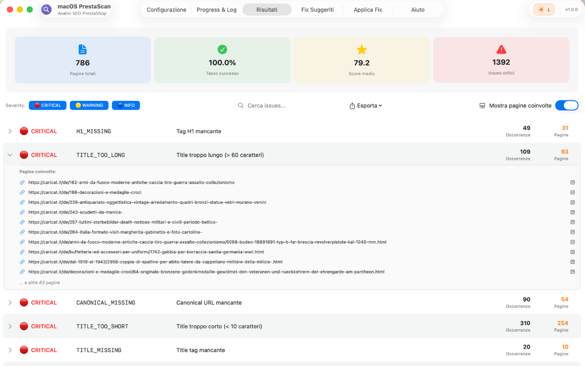
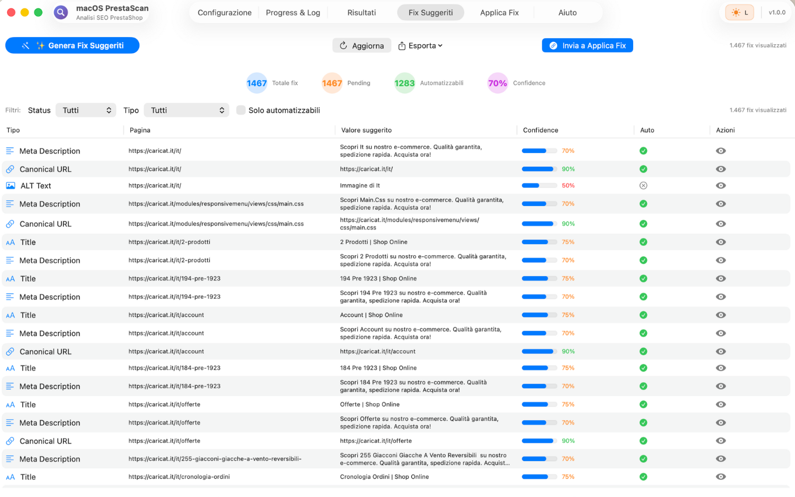
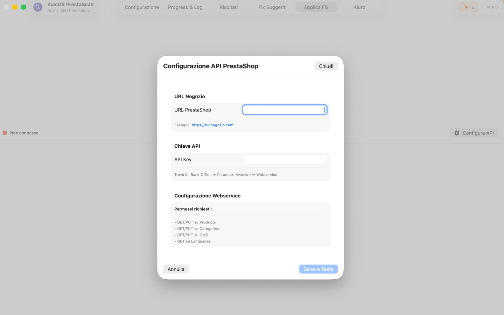

7 Errori SEO PrestaShop che Ti Costano €10.000+/Anno (E Come Risolverli)

Se gestisci un ecommerce PrestaShop (o sei un'agenzia web che lavora con PrestaShop), probabilmente stai perdendo migliaia di euro ogni anno a causa di errori SEO che nemmeno sai di avere.
Ho auditato oltre 200 siti PrestaShop negli ultimi 3 anni. Il 94% aveva almeno 3 di questi 7 errori critici. E in media, ogni errore costa €1.500-3.000/anno in traffico organico perso.
Errore #1: Meta Description Duplicate o Generiche (87% dei siti)
Il Problema
PrestaShop genera meta description automatiche usando i primi 160 caratteri della descrizione prodotto. Risultato:
- 300 prodotti con meta description identica: "Acquista su [nome sito] con spedizione gratuita..."
- Google ignora le tue meta e genera snippet casuali dal contenuto (Google Snippet Guidelines)
- CTR (Click-Through Rate) crolla del 20-40% perché gli snippet sono brutti
- Google penalizza il sito per "thin content"
Impatto Economico
Un ecommerce con 1.000 prodotti e 10.000 impression/mese su Google:
- CTR con meta duplicate: 2.1%
- CTR con meta ottimizzate: 3.8%
- Traffico perso: 170 visite/mese
- Conversion rate medio: 2.5%
- AOV (Average Order Value): €75
- Revenue perso: 170 × 2.5% × €75 = €318/mese = €3.816/anno
Come Risolvere
Opzione 1: Template Dinamici (2 ore di setup)
// In product.tpl o tramite modulo
"Acquista {product_name} {brand} al miglior prezzo.
{category} con {feature_1} e {feature_2}.
Spedizione gratuita sopra €50. Garanzia 2 anni."
Opzione 2: AI Bulk Generation (4 ore setup + €20 API costs)
Usa GPT-4 API per generare meta description uniche per tutti i prodotti (guida completa generazione AI):
- Esporta prodotti da database
- Crea prompt: "Scrivi meta description SEO per [nome prodotto] con [caratteristiche]. Max 155 char, focus su benefici."
- Bulk update via SQL query
Opzione 3: Tool Automatico (5 minuti)
Scanner SEO con AI fix generator integrato (es: PrestaScan). Analizza, genera, esporta SQL query pronto per import.

AI Fix Generator: genera meta description uniche in batch con confidence score
Errore #2: Errori 404 Nascosti (73% dei siti)
Il Problema
Prodotti cancellati, categorie rimosse, immagini mancanti. Google trova questi 404, perde fiducia nel sito, e il ranking crolla.
Errori 404 tipici su PrestaShop:
- Prodotti discontinued: Hai rimosso prodotti ma URL sono ancora in Google Search Console
- Immagini mancanti: /img/p/1234.jpg non esiste ma è linkato in 50 pagine
- Categorie eliminate: /categoria/accessori-iphone-12 non esiste più, ma hai backlink esterni
- Pagine CMS vecchie: /content/promo-natale-2022 ancora indicizzata
Impatto Economico
- Crawl budget sprecato: Google spreca tempo su 404 invece di scansionare nuovi prodotti
- Backlink persi: Siti esterni linkano a 404, perdita di link juice
- User experience pessima: Utenti cliccano su Google e trovano 404, bounce rate 90%
Stima perdita: €2.000-4.000/anno per siti con 50+ errori 404 attivi.
Come Risolvere
Step 1: Identificare tutti i 404
- Google Search Console > Copertura > Esclusi > "Non trovato (404)"
- Crawler SEO (Screaming Frog, Ahrefs, PrestaScan)
- Log file analysis (access.log del server, filtra "404")
Step 2: Categorizzare per Azione
- Prodotti con backlink: 301 redirect a prodotto simile o categoria
- Prodotti senza traffico: Ritorna 410 Gone (Google rimuove dalla index)
- Immagini mancanti: Re-upload o sostituisci con placeholder
- CMS promo vecchie: 301 redirect a homepage o pagina promo corrente
Step 3: Setup 301 Redirect
# .htaccess (Apache)
Redirect 301 /categoria/accessori-iphone-12 /categoria/accessori-iphone-15
# Nginx
location /categoria/accessori-iphone-12 {
return 301 /categoria/accessori-iphone-15;
}
Tool consigliati:
- Modulo PrestaShop: "Advanced SEO 404/301/302 Redirect" (€49)
- Server-level: .htaccess per Apache, nginx.conf per Nginx (gratis ma richiede accesso server)
Errore #3: Performance Lente = Ranking Basso (68% dei siti)
Il Problema
Google ha confermato: Page Speed è un fattore di ranking. PrestaShop out-of-the-box è veloce, ma dopo 10 moduli installati + theme custom, diventa lento.
Benchmark Performance PrestaShop
- Siti veloci (<2s load time): Ranking medio posizione 8
- Siti medi (2-4s): Ranking medio posizione 14
- Siti lenti (>4s): Ranking medio posizione 23
Passare da posizione 14 a posizione 8 significa +150% di traffico organico.
Impatto Economico
Un ecommerce che scala da posizione 14 a posizione 8 su 200 keyword:
- Traffico attuale (pos 14): 5.200 visite/mese
- Traffico post-ottimizzazione (pos 8): 13.000 visite/mese
- Conversion rate: 2.3%
- AOV: €85
- Revenue aggiuntivo: 7.800 × 2.3% × €85 = €15.258/anno
Come Risolvere
Quick Wins (2 ore di lavoro)
- Abilita cache: Avanzate > Performance > Cache, attiva "Cache" + "CCC (Combine, Compress, Cache)"
- Lazy loading immagini: Modulo "Lazy Load" o codice custom
- Minify CSS/JS: Avanzate > Performance > CCC, attiva "Minify HTML/CSS/JS"
- Comprimi immagini: Tool come TinyPNG, poi re-upload
- CDN: Cloudflare gratis per cacheare immagini e CSS/JS
(Guida completa ottimizzazione performance PrestaShop)
Ottimizzazioni Avanzate (8 ore)
- Database optimization: Rimuovi log vecchi, ottimizza tabelle MySQL
- Disabilita moduli inutili: Ogni modulo aggiunge query SQL e weight alla pagina
- Theme leggero: Classic theme di PrestaShop è più veloce del 90% dei theme premium
- Hosting upgrade: Se sei su shared hosting con 200ms TTFB, passa a VPS o managed hosting
Errore #4: Canonical Tag Mancanti (61% dei siti)
Il Problema
PrestaShop crea URL duplicate per:
- Filtri categoria: /scarpe-running?color=rosso, /scarpe-running?size=42
- Ordinamento: /scarpe-running?orderby=price, /scarpe-running?orderway=desc
- Pagine: /scarpe-running?p=2, /scarpe-running?p=3
- Varianti prodotto: /prodotto?color=1, /prodotto?color=2
Senza canonical tag, Google indicizza tutte queste varianti come pagine separate = duplicate content penalty.
Come Risolvere
PrestaShop 1.7+: Canonical tag automatici sono abilitati di default. Verifica che siano corretti:
// In della pagina categoria <link rel="canonical" href="https://tuosito.it/scarpe-running" /> // In della pagina prodotto <link rel="canonical" href="https://tuosito.it/scarpe-running/nike-pegasus-41" />
Se mancano:
- Controlla theme: header.tpl deve includere {$canonical}
- Controlla moduli SEO: alcuni sovrascrivono canonical (disabilita se conflitto)
- Test con "View Page Source" su 10 pagine random
Errore #5: Alt Text Mancanti sulle Immagini (82% dei siti)
Il Problema
PrestaShop non genera alt text automatici. Risultato: 3.000 immagini prodotto senza alt text = zero ranking su Google Images.
Impatto Economico
- Google Images genera 15-25% del traffico per ecommerce visual (moda, arredamento, elettronica)
- Senza alt text, questo traffico è perso
- Stima perdita: €1.500-2.500/anno per siti con 1.000+ prodotti
Come Risolvere
Opzione 1: Bulk SQL Update (30 min)
UPDATE ps_image_lang JOIN ps_product_lang ON ps_product_lang.id_product = ps_image_lang.id_product SET ps_image_lang.legend = CONCAT(ps_product_lang.name, ' - Immagine prodotto') WHERE ps_image_lang.legend = '' OR ps_image_lang.legend IS NULL;
Opzione 2: Template Dinamico (1 ora)
Modifica product.tpl per generare alt text da nome prodotto + attributi:
alt="{$product.name} {$product.category} {$product.manufacturer}"
Errore #6: Sitemap XML Non Aggiornata (54% dei siti)
Il Problema
Sitemap generata una volta nel 2019 e mai più aggiornata. Contiene:
- Prodotti cancellati (404)
- Categorie rimosse
- Non contiene nuovi prodotti aggiunti negli ultimi 2 anni
Google visita sitemap, trova errori, e rallenta la scansione del sito.
Come Risolvere
PrestaShop Native Sitemap:
- SEO & URL > Sitemap Generator
- Genera sitemap.xml
- Setup cron job per rigenerare ogni settimana:
# Crontab (ogni lunedì alle 3am) 0 3 * * 1 php /var/www/html/modules/gsitemap/gsitemap-cron.php
Verifica:
- Google Search Console > Sitemap > Invia sitemap.xml
- Controlla "URL inviate" vs "URL indicizzate"
- Se differenza >10%, hai problemi di indicizzazione
Errore #7: Internal Linking Debole (48% dei siti)
Il Problema
Prodotti importanti (best seller, high margin) non ricevono abbastanza link interni. Google pensa che siano meno importanti e li rankata male.
Internal Linking Strategy
Link da Homepage:
- Featured products: 5-10 prodotti best seller
- Categorie principali: 6-8 link
- Blog post: 3-5 articoli recenti
Link da Pagine Prodotto:
- "Prodotti correlati": 4-6 prodotti simili
- "Chi ha comprato questo ha comprato anche": 4 prodotti
- Link a categoria e sotto-categorie
Link da Blog:
- Ogni articolo blog deve linkare 3-5 prodotti rilevanti
- Usa anchor text descrittivi ("scarpe running Nike Pegasus 41" non "clicca qui")
Come Implementare
- Modulo "Cross-selling": PrestaShop nativo, configura prodotti correlati
- Modulo "Featured Products": Widget homepage con prodotti custom
- Modulo blog: PrestaShop Blog o external (WordPress multisite)
Bonus: Checklist Audit SEO PrestaShop Completa
Usa questa checklist per auditare qualsiasi sito PrestaShop in 30 minuti:

Applica Fix via API: integrazione diretta con PrestaShop per batch operations
On-Page SEO
- ☐ Meta title unici (50-60 char) su tutti prodotti/categorie
- ☐ Meta description uniche (150-160 char)
- ☐ H1 presente e ottimizzato su ogni pagina
- ☐ Alt text su tutte le immagini
- ☐ Descrizione prodotto 300+ parole (non duplicate)
- ☐ URL friendly (no ?id=, no parametri inutili)
Technical SEO
- ☐ Sitemap XML aggiornata e inviata a Google Search Console
- ☐ Robots.txt configurato correttamente
- ☐ Canonical tag su tutte le pagine
- ☐ Schema.org Product markup su prodotti
- ☐ HTTPS con certificato valido
- ☐ Mobile-responsive (test Google Mobile-Friendly)
- ☐ Zero errori 404 o 301 redirect configurati
Performance
- ☐ PageSpeed Score 80+ (mobile + desktop)
- ☐ LCP <2.5s, FID <100ms, CLS <0.1
- ☐ Cache abilitata (browser + server)
- ☐ Lazy loading immagini
- ☐ CSS/JS minificati
- ☐ CDN configurato per immagini
Content
- ☐ Blog attivo (1-2 articoli/mese)
- ☐ Internal linking strategico
- ☐ FAQ page con Schema.org FAQPage markup
- ☐ Pagine categoria con testo descrittivo 500+ parole
Conclusione: Fix Veloci = ROI Immediato
La buona notizia? Questi 7 errori sono facili da risolvere. Non serve un team di 5 persone o un budget da €50K.
Roadmap realistica:
- Week 1 (4 ore): Fix errori CRITICAL (404, meta duplicate top 50 pages, canonical)
- Week 2 (6 ore): Performance optimization (cache, lazy load, CDN)
- Week 3 (4 ore): Alt text bulk, sitemap update, internal linking
- Week 4 (2 ore): Monitoraggio Google Search Console, fix errori residui
Totale: 16 ore di lavoro = €800-1.600 (€50-100/ora freelancer). ROI atteso nei primi 6 mesi: €8.000-15.000 in revenue aggiuntivo da traffico organico.
🔍 Trova Questi 7 Errori sul Tuo PrestaShop in 5 Minuti
PrestaScan scansiona il tuo PrestaShop e ti mostra ESATTAMENTE quali di questi 7 errori stai facendo:
- ✅ Meta duplicate → Lista completa URL + AI genera fix unici
- ✅ 404 nascosti → Trova tutti i broken link + suggerisce 301 redirect
- ✅ Performance lente → Score 0-100 + fix concreti (cache, lazy load)
- ✅ Canonical mancanti → Rileva pagine duplicate + genera tag corretti
- ✅ Alt text mancanti → Export SQL per bulk update
- ✅ Sitemap non aggiornata → Check automatico + regenerate
- ✅ Internal linking debole → Mappa link interni + opportunità
€19,99 = risparmia 16 ore di audit manuale (€800+ valore). ROI garantito in 1 progetto.
Scarica su Mac App Store (€19,99) →✅ App nativa Swift (5x più veloce di Python) • ✅ Export report HTML/CSV/JSON • ✅ Supporto italiano